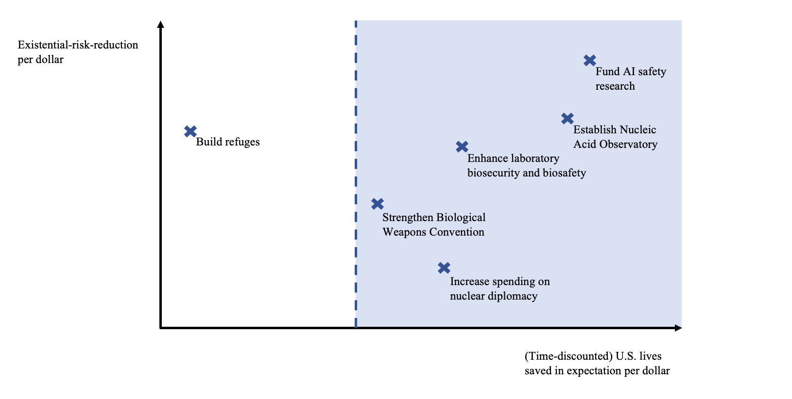

How Much Should Governments Pay to Prevent Catastrophes? Longtermism’s Limited Role
Abstract
Longtermists have argued that humanity should significantly increase its efforts to prevent catastrophes like nuclear wars, pandemics, and AI disasters. But one prominent longtermist argument overshoots this conclusion: the argument also implies that humanity should reduce the risk of existential catastrophe even at extreme cost to the present generation. This overshoot means that democratic governments cannot use the longtermist argument to guide their catastrophe policy. In this chapter, we show that the case for preventing catastrophe does not depend on longtermism. Standard cost-benefit analysis implies that governments should spend much more on reducing catastrophic risk. We argue that a government catastrophe policy guided by cost-benefit analysis should be the goal of longtermists in the political sphere. This policy would be democratically acceptable, and it would reduce existential risk by almost as much as a strong longtermist policy.
1. Introduction
It would be very bad if humanity suffered a nuclear war, a deadly pandemic, or an AI disaster. This is for two main reasons. The first is that these catastrophes could kill billions of people. The second is that they could cause human extinction or the permanent collapse of civilization.
Longtermists have argued that humanity should increase its efforts to avert nuclear wars, pandemics, and AI disasters (Beckstead 2013; Bostrom 2013; Greaves and MacAskill 2021; MacAskill 2022; Ord 2020).By ‘longtermists’, we mean people particularly concerned with ensuring that humanity’s long-term future goes well. One prominent longtermist argument for this conclusion appeals to the second reason: these catastrophes could lead to human extinction or the permanent collapse of civilization, and hence prevent an enormous number of potential people from living happy lives in a good future (Beckstead 2013; Bostrom 2013; Greaves and MacAskill 2021; MacAskill 2022: 8–9; Ord 2020: 43–49). These events would then qualify as existential catastrophes: catastrophes that destroy humanity’s long-term potential (Ord 2020: 37).
Although this longtermist argument has been compelling to many, it has at least two limitations: limitations that are especially serious if the intended conclusion is that democratic governments should increase their efforts to prevent catastrophes. First, the argument relies on a premise that many people reject: that it would be an overwhelming moral loss if future generations never exist. Second, the argument overshoots. Given other plausible claims, building policy on this premise would not only lead governments to increase their efforts to prevent catastrophes. It would also lead them to impose extreme costs on the present generation for the sake of miniscule reductions in the risk of existential catastrophe. Since most people’s concern for the existence of future generations is limited, this policy would be democratically unacceptable, and so governments cannot use the longtermist argument to guide their catastrophe policy.
In this chapter, we offer a standard cost-benefit analysis argument for reducing the risk of catastrophe. We show that, given plausible estimates of catastrophic risk and the costs of reducing it, many interventions available to governments pass a cost-benefit analysis test. Therefore, the case for averting catastrophe does not depend on longtermism. In fact, we argue, governments should do much more to reduce catastrophic risk even if future generations do not matter at all. The first reason that a catastrophe would be bad — billions of people might die — by itself warrants much more action than the status quo. This argument from present people’s interests avoids both limitations of the longtermist argument: it assumes only that the present generation matters, and it does not overshoot. Nevertheless, like the longtermist argument, it implies that governments should do much more to reduce catastrophic risk.
We then argue that getting governments to adopt a catastrophe policy based on cost-benefit analysis should be the goal of longtermists in the political sphere. This goal is achievable, because cost-benefit analysis is already a standard tool for government decision-making and because moving to a CBA-driven catastrophe policy would benefit the present generation. Adopting a CBA-driven policy would also reduce the risk of existential catastrophe by almost as much as adopting a strong longtermist policy founded on the premise that it would be an overwhelming moral loss if future generations never exist.
We then propose that the longtermist worldview can play a supplementary role in government catastrophe policy. Longtermists can make the case for their view, and thereby increase present people’s willingness to pay for pure longtermist goods: goods that do not much benefit the present generation but improve humanity’s long-term prospects. These pure longtermist goods include especially refuges designed to help civilization recover from future catastrophes. When present people are willing to pay for such things, governments should fund them. This spending would have modest costs for those alive today and great expected benefits for the long-run future.
We end by arguing that longtermists should commit to acting in accordance with a CBA-driven catastrophe policy in the political sphere. This commitment would help bring about an outcome that is much better than the status quo, for the present generation and long-term future alike.
2. The risk of catastrophe
As noted above, we are going to use standard cost-benefit analysis to argue for increased government spending on preventing catastrophes.Posner (2004) is one precedent in the literature. In another respect we echo Baum (2015), who argues that we need not appeal to far-future benefits to motivate further efforts to prevent catastrophes. We focus on the U.S. government, but our points apply to other countries as well (with modifications that will become clear below). We also focus on the risk of global catastrophes, which we define as events that kill at least 5 billion people. Many events could constitute a global catastrophe in the coming years, but we concentrate on three in particular: nuclear wars, pandemics, and AI disasters. Reducing the risk of these catastrophes is particularly cost-effective.
The first thing to establish is that the risk is significant. That presents a difficulty. There has never yet been a global catastrophe by our definition, so we cannot base our estimates of the risk on long-run frequencies. But this difficulty is surmountable because we can use other considerations to guide our estimates. These include near-misses (like the Cuban Missile Crisis), statistical models (like power-law extrapolations), and empirical trends (like advances in AI). We do not have the space to assess all the relevant considerations in detail, so we mainly rely on previously published estimates of the risks. These estimates should be our point of departure, pending further investigation. Note also that these estimates need not be perfectly accurate for our conclusions to go through. It often suffices that the risks exceed some low value.
Let us begin with the risk of nuclear war. Toby Ord estimates that the existential risk from nuclear war over the next 100 years is about 1-in-1,000 (2020: 167). Note, however, that ‘existential risk’ refers to the risk of an existential catastrophe: a catastrophe that destroys humanity’s long-term potential. This is a high bar. It means that any catastrophe from which humanity ever recovers (even if that recovery takes many millennia) does not count as an existential catastrophe. Nuclear wars can be enormously destructive without being likely to pose an existential catastrophe, so Ord’s estimate of the risk of “full-scale” nuclear war is much higher, at about 5% over the next 100 years (Wiblin and Ord 2020). This figure is roughly aligned with our own views (around 3%) and with other published estimates of nuclear risk. At the time of writing, the forecasting community Metaculus puts the risk of thermonuclear war before 2070 at 11% (Metaculus 2022c).A war counts as thermonuclear if and only if three countries each detonate at least 10 nuclear devices of at least 10 kiloton yield outside of their own territory or two countries each detonate at least 50 nuclear devices of at least 10 kiloton yield outside of their own territory. Luisa Rodriguez’s (2019b) aggregation of expert and superforecaster estimates has the risk of nuclear war between the U.S. and Russia at 0.38% per year, while Martin Hellman (2008: 21) estimates that the annual risk of nuclear war between the U.S. and Russia stemming from a Cuban-Missile-Crisis-type scenario is 0.02-0.5%.
We recognise that each of these estimates involve difficult judgement-calls. Nevertheless, we think it would be reckless to suppose that the true risk of nuclear war this century is less than 1%. Here are assorted reasons for caution. Nuclear weapons have been a threat for just a single human lifetime, and in those years we have already racked up an eye-opening number of close calls. The Cuban Missile Crisis is the most famous example, but we also have declassified accounts of many accidents and false alarms (see, for example, Ord 2020, Appendix C). And although nuclear conflict would likely be devastating for all sides involved, leaders often have selfish incentives for brinkmanship, and may behave irrationally under pressure. Looking ahead, future technological developments may upset the delicate balance of deterrence. And we cannot presume that a nuclear war would harm only its direct targets. Research has suggested that the smoke from smouldering cities would take years to dissipate, during which time global temperatures and rainfall would drop low enough to kill most crops.See, for example, (Coupe et al. 2019; Mills et al. 2014; Robock, Oman, and Stenchikov 2007; Xia et al. 2022). Some doubt that nuclear war would have such severe atmospheric effects (Reisner et al. 2018; Seitz 2011). That leads Rodriguez (2019a) to estimate that a U.S.-Russia nuclear exchange would cause a famine that kills 5.5 billion people in expectation. One of us (Shulman) estimates a lower risk of this kind of nuclear winter, a lower average number of warheads deployed in a U.S.-Russia nuclear exchange, and a higher likelihood that emergency measures succeed in reducing mass starvation, but we still put expected casualties in the billions.
Pandemics caused by pathogens that have been engineered in a laboratory are another major concern. Ord (2020: 167) estimates that the existential risk over the next century from these engineered pandemics is around 3%. And as with nuclear war, engineered pandemics could be extremely destructive without constituting an existential catastrophe, so Ord’s estimate of the risk of global catastrophe arising from engineered pandemics would be adjusted upward from this 3% figure. At the time of writing, Metaculus suggests that there is a 9.6% probability that an engineered pathogen causes the human population to drop by at least 10% in a period of 5 years or less by 2100.Metaculus forecasters estimate that there is a 32% probability that the human population drops by at least 10% in a period of 5 years or less by 2100 (Metaculus 2022a), and a 30% probability conditional on this drop occurring that it is caused by an engineered pathogen (Metaculus 2022b). Multiplying these figures gets us 9.6%. This calculation ignores some minor technicalities to do with the possibility that there will be more than one qualifying drop in population. In a 2008 survey of participants at a conference on global catastrophes, the median respondent estimated a 10% chance that an engineered pandemic kills at least 1 billion people and a 2% chance that an engineered pandemic causes human extinction before 2100 (Sandberg and Bostrom 2008).
These estimates are based on a multitude of factors, of which we note a small selection. Diseases can be very contagious and very deadly.COVID-19 spread to almost every community, as did the 1918 Flu. Engineered pandemics could be even harder to suppress. Rabies and septicemic plague kill almost 100% of their victims in the absence of treatment (Millett and Snyder-Beattie 2017: 374). There is no strong reason to suppose that engineered diseases could not be both. Scientists continue to conduct research in which pathogens are modified to enhance their transmissibility, lethality, and resistance to treatment (Millett and Snyder-Beattie 2017: 374; Ord 2020: 128–29). We also have numerous reports of lab leaks: cases in which pathogens have been accidentally released from biological research facilities and allowed to infect human populations (Ord 2020: 130–31). Many countries ran bioweapons programs during the twentieth century, and bioweapons were used in both World Wars (Millett and Snyder-Beattie 2017: 374). Terrorist groups like the Aum Shinrikyo cult have tried to use biological agents to cause mass casualties (Millett and Snyder-Beattie 2017: 374). Their efforts were hampered by a lack of technology and expertise, but humanity’s collective capacity for bioterror has grown considerably since then. A significant number of people now have the ability to cause a biological catastrophe, and this number looks set to rise further in the coming years (Ord 2020: 133–34).
Ord (2020: 167) puts the existential risk from artificial general intelligence (AGI) at 10% over the next century. This figure is the product of a 50% chance of human-level AGI by 2120 and a 20% risk of existential catastrophe, conditional on AGI by 2120 (Ord 2020: 168–69). Meanwhile, Joseph Carlsmith (2021: 49) estimates a 65% probability that by 2070 it will be possible and financially feasible to build AI systems capable of planning, strategising, and outperforming humans in important domains. He puts the (unconditional) existential risk from these AI systems at greater than 10% before 2070 (2021: 47). The aggregate forecast in a recent survey of machine learning researchers is a 50% chance of high-level machine intelligence by 2059 (Stein-Perlman, Weinstein-Raun, and Grace 2022).The survey defines ‘high-level machine intelligence’ as machine intelligence that can accomplish every task better and more cheaply than human workers.Admittedly, we have some reason to suspect these estimates. As Cotra (2020: 40–41) notes, machine learning researchers' responses in a previous survey (Grace et al. 2018) were implausibly sensitive to minor reframings of questions.In any case, recent progress in AI has exceeded almost all expectations. On two out of four benchmarks, state-of-the-art performance in June 2022 was outside the 90% credible interval of an aggregate of forecasters’ predictions made in August 2021 (Steinhardt 2022). The median respondent in that survey estimated a 5% probability that AI causes human extinction or humanity’s permanent and severe disempowerment (Stein-Perlman et al. 2022). Our own estimates are closer to Carlsmith and the survey respondents on timelines and closer to Ord on existential risk.
These estimates are the most speculative: nuclear weapons and engineered pathogens already exist in the world, while human-level AGI is yet to come. We cannot make a full case for the risk of AI catastrophe in this chapter, but here is a sketch. AI capabilities are growing quickly, powered partly by rapid algorithmic improvements and especially by increasing computing budgets. Before 2010, compute spent on training AI models grew in line with Moore’s law, but in the recent deep learning boom it has increased much faster, with an average doubling time of 6 months over that period (Sevilla et al. 2022). Bigger models and longer training runs have led to remarkable progress in domains like computer vision, language, protein modelling, and games. The next 20 years are likely to see the first AI systems close to the computational scale of the human brain, as hardware improves and spending on training runs continues to increase from millions of dollars today to many billions of dollars (Cotra 2020: 1–9, 2022). Extrapolating past trends suggests that these AI systems may also have capabilities matching the human brain across a wide range of domains.
AI developers train their systems using a reward function (or loss function) which assigns values to the system's outputs, along with an algorithm that modifies the system to perform better according to the reward function. But encoding human intentions in a reward function has proved extremely difficult, as is made clear by the many recorded instances of AI systems achieving high reward by behaving in ways unintended by their designers (DeepMind 2020; Krakovna 2018). These include systems pausing Tetris forever to avoid losing (Murphy 2013), using camera-trickery to deceive human evaluators into believing that a robot hand is completing a task (DeepMind 2020; OpenAI 2017), and behaving differently under observation to avoid penalties for reproduction (Lehman et al. 2020: 282; Muehlhauser 2021). We also have documented cases of AIs adopting goals that produce high reward in training but differ in important ways from the goals intended by their designers (Langosco et al. 2022; Shah et al. 2022). One example comes in the form of a model trained to win a video game by reaching a coin at the right of the stage. The model retained its ability to navigate the environment when the coin was moved, but it became clear that the model’s real goal was to go as far to the right as possible, rather than to reach the coin (Langosco et al. 2022: 4). So far, these issues of reward hacking and goal misgeneralization have been of little consequence, because we have been able to shut down misbehaving systems or alter their reward functions. But that looks set to change as AI systems come to understand and act in the wider world: a powerful AGI could learn that allowing itself to be turned off or modified is a poor way of achieving its goal. And given any of a wide variety of goals, this kind of AGI would have reason to perform well in training and conceal its real goal until AGI systems are collectively powerful enough to seize control of their reward processes (or otherwise pursue their goals) and defeat any human response.
That is one way in which misaligned AGI could be disastrous for humanity. Guarding against this outcome likely requires much more work on robustly aligning AI with human intentions, along with the cautious deployment of advanced AI to enable proper safety engineering and testing. Unfortunately, economic and geopolitical incentives may lead to much less care than is required. Competing companies and nations may cut corners and expose humanity to serious risks in a race to build AGI (Armstrong, Bostrom, and Shulman 2016). The risk is exacerbated by the winner’s curse dynamic at play: all else equal, it is the actors who most underestimate the dangers of deployment that are most likely to do so (Bostrom, Douglas, and Sandberg 2016).
Assuming independence and combining Ord’s risk-estimates of 10% for AI, 3% for engineered pandemics, and 5% for nuclear war gives us at least a 17% risk of global catastrophe from these sources over the next 100 years.Here we assume that a full-scale nuclear war would kill at least 5 billion people and hence qualify as a global catastrophe (Rodriguez 2019a; Xia et al. 2022: 1).The risk is not \(10\% + 3\% + 5\% = 18\%\), because each of Ord’s risk-estimates is conditional on humanity not suffering an existential catastrophe from another source in the next 100 years (as is made clear by Ord 2020: 173–74). If we assume statistical independence between risks, the probability that there is no global catastrophe from AI, engineered pandemics, or nuclear war in the next 100 years is at most \((1 - 0.1) \times (1 - 0.03) \times (1 - 0.05) \approx 83\%\). The probability that there is some such global catastrophe is then at least 17%. There might well be some positive correlation between risks (Ord 2020: 173–75), but plausible degrees of correlation will not significantly reduce total risk.Note that the 17% figure does not incorporate the upward adjustment for the (significant, in our view) likelihood that an engineered pandemic constitutes a global catastrophe but not an existential catastrophe. If we assume that the risk per decade is constant, the risk over the next decade is about 1.85%.If the risk over the next century is \(17\%\) and the risk per decade is constant, then the risk per decade is \(x\) such that \(1 - (1 - x)^{10} = 17\%\). That gives us \(x \approx 1.85\%\).There are reasons to doubt that the risk this decade is as high as the risk in future decades. One might think that ‘crunch time’ for AI and pandemic risk is more than a decade off. One might also think that most nuclear risk comes from scenarios in which future technological developments cast doubt on nations’ second-strike capability, thereby incentivising first-strikes. These factors are at least partly counterbalanced by the likelihood that we will be better prepared for risks in future decades. If we assume also that every person’s risk of dying in this kind of catastrophe is equal, then (conditional on not dying in other ways) each U.S. citizen’s risk of dying in this kind of catastrophe in the next decade is at least \(5/9 \times 1.85\% \approx 1.03\%\) (since, by our definition, a global catastrophe would kill at least 5 billion people, and the world population is projected to remain under 9 billion until 2033). According to projections of the U.S. population pyramid, 6.88% of U.S. citizens alive today will die in other ways over the course of the next decade.The projected number of Americans at least 10 years old in 2033 is 6.88% smaller than the number of Americans in 2023 (PopulationPyramid 2019). That suggests that U.S. citizens alive today have on average about a 1% risk of being killed in a nuclear war, engineered pandemic, or AI disaster in the next decade. That is about ten times their risk of being killed in a car accident.Our World in Data (2019) records a mean of approximately 41,000 road injury deaths per year in the United States over the past decade.
3. Interventions to reduce the risk
There is good reason to think that the risk of global catastrophe in the coming years is significant. Based on Ord’s estimates, we suggest that U.S. citizens’ risk of dying in a nuclear war, pandemic, or AI disaster in the next decade is on average about 1%. We now survey some ways of reducing this risk.
The Biden administration’s 2023 Budget lists many ways of reducing the risk of biological catastrophes (The White House 2022c; U.S. Office of Management and Budget 2022). These include developing advanced personal protective equipment, along with prototype vaccines for the viral families most likely to cause pandemics.This Budget includes many of the recommendations from the Apollo Program for Biodefense and Athena Agenda (Bipartisan Commission on Biodefense 2021, 2022). The U.S. government can also enhance laboratory biosafety and biosecurity, by improving training procedures, risk assessments, and equipment (Bipartisan Commission on Biodefense 2021: 24). Another priority is improving our capacities for microbial forensics (including our abilities to detect engineered pathogens), so that we can better identify and deter potential bad actors (Bipartisan Commission on Biodefense 2021: 24–25). Relatedly, the U.S. government can strengthen the Biological Weapons Convention by increasing the budget and staff of the body responsible for its implementation, and by working to grant them the power to investigate suspected breaches (Ord 2020: 279–80). The Nuclear Threat Initiative recommends establishing a global entity focused on preventing catastrophes from biotechnology, amongst other things (Nuclear Threat Initiative 2020a: 3). Another key priority is developing pathogen-agnostic detection technologies. One such candidate technology is a Nucleic Acid Observatory, which would monitor waterways and wastewater for changing frequencies of biological agents, allowing for the early detection of potential biothreats (The Nucleic Acid Observatory Consortium 2021).
The U.S. government can also reduce the risk of nuclear war this decade. Ord (2020: 278) recommends restarting the Intermediate-Range Nuclear Forces Treaty, taking U.S. intercontinental ballistic missiles off of hair-trigger alert (“Launch on Warning”), and increasing the capacity of the International Atomic Energy Agency to verify that nations are complying with safeguards agreements. Other recommendations come from the Centre for Long-Term Resilience’s Future Proof report (2021). They are directed towards the U.K. government but apply to the U.S. as well. The recommendations include committing not to incorporate AI systems into nuclear command, control, and communications (NC3) and lobbying to establish this norm internationally.Avin and Amadae (2019) survey ways in which AI may exacerbate nuclear risk and offer policy recommendations, including the recommendation not to incorporate AI into NC3. The U.S. National Security Commission on Artificial Intelligence (2021: 98) make a similar recommendation. Another is committing to avoid cyber operations that target the NC3 of Nuclear Proliferation Treaty signatories and establishing a multilateral agreement to this effect. The Nuclear Threat Initiative (2020b) offers many recommendations to the Biden administration for reducing nuclear risk, some of which have already been taken up.Those taken up already include extending New START (Strategic Arms Reduction Treaty) and issuing a joint declaration with the other members of the P5 — China, France, Russia, and the U.K. — that a “nuclear war cannot be won and must never be fought” (The White House 2022b). Others include working to bring the Comprehensive Nuclear-Test-Ban Treaty into force, re-establishing the Joint Comprehensive Plan of Action’s limits on Iran’s nuclear activity, and increasing U.S. diplomatic efforts with Russia and China (Nuclear Threat Initiative 2020b).It is worth noting that the dynamics of nuclear risk are complex, and that experts disagree about the likely effects of these interventions. What can be broadly agreed is that nuclear risk should receive more investigation and funding.
To reduce the risks from AI, the U.S. government can fund research in AI safety. This should include alignment research focused on reducing the risk of catastrophic AI takeover by ensuring that even very powerful AI systems do what we intend, as well as interpretability research to help us understand neural networks’ behaviour and better supervise their training (Amodei et al. 2016; Hendrycks et al. 2022). The U.S. government can also fund research and work in AI governance, focused on devising norms, policies, and institutions to ensure that the development of AI is beneficial for humanity (Dafoe 2018).
4. Cost-benefit analysis of catastrophe-preventing interventions
We project that funding this suite of interventions for the next decade would cost less than $400 billion.The Biden administration’s 2023 Budget requests $88.2 billion over five years (The White House 2022c; U.S. Office of Management and Budget 2022). We can suppose that another five years of funding would require that much again. A Nucleic Acid Observatory covering the U.S. is estimated to cost $18.4 billion to establish and $10.4 billion per year to run (The Nucleic Acid Observatory Consortium 2021: 18). Ord (2020: 202–3) recommends increasing the budget of the Biological Weapons Convention to $80 million per year. Our listed interventions to reduce nuclear risk are unlikely to cost more than $10 billion for the decade. AI safety and governance might cost up to $10 billion as well. The total cost of these interventions for the decade would then be $319.6 billion. We also expect this suite of interventions to reduce the risk of global catastrophe over the next decade by at least 0.1pp (percentage points). A full defence of this claim would require more detail than we can fit in this chapter, but here is one way to illustrate the claim’s plausibility. Imagine an enormous set of worlds like our world in 2023. Each world in this set is different with respect to the features of our world about which we are uncertain, and worlds with a certain feature occur in the set in proportion to our best evidence about the presence of that feature in our world. If, for example, the best appraisal of our available evidence suggests that there is a 55% probability that the next U.S. President will be a Democrat, then 55% of the worlds in our set have a Democrat as the next President. We claim that in at least 1-in-1,000 of these worlds the interventions we recommend above would prevent a global catastrophe this decade. That is a low bar, and it seems plausible to us that the interventions above meet it. Our question now is: given this profile of costs and benefits, do these interventions pass a standard cost-benefit analysis test?
To assess interventions expected to save lives, cost-benefit analysis begins by valuing mortality risk reductions: putting a monetary value on reducing citizens’ risk of death (Kniesner and Viscusi 2019). To do that, we first determine how much a representative sample of citizens are willing to pay to reduce their risk of dying this year by a given increment (often around 0.01pp, or 1-in-10,000). One method is to ask them, giving us their stated preferences. Another method is to observe people’s behaviour, particularly their choices about what to buy and what jobs to take, giving us their revealed preferences.We can observe how much people pay for products that reduce their risk of death, like bike helmets, smoke alarms, and airbags. We can also observe how much more people are paid to do risky work, like service nuclear reactors and fly new planes (Kniesner and Viscusi 2019).
U.S. government agencies use methods like these to estimate how much U.S. citizens are willing to pay to reduce their risk of death.US agencies rely mainly on hedonic wage studies, which measure the wage-premium for risky jobs. European agencies tend to rely on stated preference methods (Kniesner and Viscusi 2019: 10). This figure is then used to calculate the value of a statistical life (VSL): the value of saving one life in expectation via small reductions in mortality risks for many people. The primary VSL figure used by the U.S. Department of Transportation for 2021 is $11.8 million, with a range to account for various kinds of uncertainty spanning from about $7 million to $16.5 million (U.S. Department of Transportation 2021a, 2021b).Updating for inflation and growth in real incomes, the U.S. Environmental Protection Agency’s central estimate for 2021 is approximately $12.2 million. The U.S. Department of Health and Human Services’ 2021 figure is about $12.1 million (Kniesner and Viscusi 2019). These figures are used in the cost-benefit analyses of policies expected to save lives. Costs and benefits occurring in the future are discounted at a constant annual rate. The Environmental Protection Agency (EPA) uses annual discount rates of 2% and 3%; the Office of Information and Regulatory Affairs (OIRA) instructs agencies to conduct analyses using annual discount rates of 3% and 7% (Graham 2008: 504). The rationale is opportunity costs and people’s rate of pure time preference (Graham 2008: 504).
Now for the application to the risk of global catastrophe (otherwise known as global catastrophic risk, or GCR). We defined a global catastrophe above as an event that kills at least 5 billion people, and we assumed that each person’s risk of dying in a global catastrophe is equal. So, given a world population of less than 9 billion and conditional on a global catastrophe occurring, each American’s risk of dying in that catastrophe is at least 5/9. Reducing GCR this decade by 0.1pp then reduces each American’s risk of death this decade by at least 0.055pp. Multiplying that figure by the U.S. population of 330 million, we get the result that reducing GCR this decade by 0.1pp saves at least 181,500 American lives in expectation. If that GCR-reduction were to occur this year, it would be worth at least $1.27 trillion on the Department of Transportation’s lowest VSL figure of $7 million. But since the GCR-reduction would occur over the course of a decade, cost-benefit analysis requires that we discount. If we use OIRA’s highest annual discount rate of 7% and suppose (conservatively) that all the costs of our interventions are paid up front while the GCR-reduction comes only at the end of the decade, we get the result that reducing GCR this decade by 0.1pp is worth at least $1.27 trillion \(/\ 1.07^{10\ } =\) $646 billion. So, at a cost of $400 billion, these interventions comfortably pass a standard cost-benefit analysis test.Researchers and analysts in the US frequently cite a $50,000-per-quality-adjusted-life-year (QALY) threshold for funding medical interventions, but this figure lacks any particular normative significance and has not been updated to account for inflation and real growth in incomes since it first came to prominence in the mid-1990s (Neumann, Cohen, and Weinstein 2014). The £20,000-£30,000-per-QALY range recommended by the U.K.’s National Institute for Health and Care Excellence suffers from similar defects (Claxton et al. 2016). More principled estimates put a higher value on years of life (Aldy and Viscusi 2008; Favaloro and Berger 2021; Hirth et al. 2000). In any case, simply updating the $50,000-per-QALY threshold to account for inflation and growth since 1995 would imply a value of more than $100,000-per-QALY. At $100,000-per-QALY, the value of reducing GCR a decade from now by 0.1pp is at least 0.001×$100,000×14,583,317,092×(5/9)×(1/1.0710)≈$412billion. (14,583,317,092 is the expected number of American life-years saved by preventing a global catastrophe in 2033, based on a projected US population pyramid (PopulationPyramid 2019) and life-expectancy statistics (U.S. Social Security Administration 2022). See Thornley (2022).) That figure justifies the suite of interventions we recommend below. We believe that many interventions are also justified on the more demanding $50,000-per-QALY figure. That in turn suggests that the U.S. government should fund these interventions. Doing so would save American lives more cost-effectively than many other forms of government spending on life-saving, such as transportation and environmental regulations.
In fact, we can make a stronger argument. Using a projected U.S. population pyramid and some life-expectancy statistics, we can calculate that approximately 79% of the American life-years saved by preventing a global catastrophe in 2033 would accrue to Americans alive today in 2023 (Thornley 2022). 79% of $646 billion is approximately $510 billion. That means that funding this suite of GCR-reducing interventions is well worth it, even considering only the benefits to Americans alive today.And recall that the above figures assume a conservative 0.1pp reduction in GCR as a result of implementing the whole suite of interventions. We think that a 0.5pp reduction in GCR is a more reasonable estimate, in which case the benefit-cost ratio of the suite is over 5. The most cost-effective interventions within the suite will have even more favourable benefit-cost ratios.
It is also worth noting some important ways in which our calculations up to this point underrate the value of GCR-reducing interventions. First, we have appealed only to these interventions’ GCR-reducing benefits: the benefits of shifting probability mass away from outcomes in which at least 5 billion people die and towards outcomes in which very few people die. But these interventions would also decrease the risk of smaller catastrophes, in which less than 5 billion people die.This is especially so in the case of pandemics, and in fact the pandemic-preventing interventions that we list are justified even considering only their effects on the risk of pandemics about as damaging as COVID-19. The total cost of the COVID-19 pandemic for the U.S. has been estimated at $16 trillion (Cutler and Summers 2020), which suggests that it is worth the U.S. spending up to $32 billion per year to decrease the annual risk of such pandemics by 0.2pp (and Cutler and Summers’ estimate is based on an October 2020 projection of 625,000 deaths. At the time of writing, Our World in Data (2022) has total confirmed US COVID-19 deaths at over 1 million). Our listed pandemic-preventing interventions are projected to cost less than $32 billion per year, and they would plausibly reduce annual risk by more than 0.2pp. After all, the observed frequency of pandemics as bad as COVID-19 is about one per century, suggesting an annual risk of 1% per year. A 0.2pp-decrease then means a 20%-decrease in baseline risk, which seems easily achievable via the interventions that we recommend. And since our listed pandemic-preventing interventions can be justified in this way, the case for funding them does not depend on difficult forecasts of the likelihood of unprecedented events, like a pandemic constituting a global catastrophe. Instead, we can appeal to the observed frequency of pandemics about as damaging as COVID-19. Second, the value of preventing deaths from catastrophe is plausibly higher than the value of preventing traffic deaths. The EPA (2010: 20–26) and U.K. Treasury (2003: 62) have each recommended that a higher VSL be used for cancer risks than for accidental risks, to reflect the fact that dying from cancer tends to be more unpleasant than dying in an accident (Kniesner and Viscusi 2019: 16). We suggest that the same point applies to death by nuclear winter and engineered pandemic.
Here is another benefit of our listed GCR-reducing interventions. They do not just reduce U.S. citizens’ risk of death. They also reduce the risk of death for citizens of other nations. That is additional reason to fund these interventions.There is a case for including benefits to non-U.S. citizens in cost-benefit analyses of GCR-reducing interventions. After all, saving the lives of non-U.S. citizens is morally important. And the Biden administration already includes costs to non-U.S. citizens in its social cost of carbon (SCC): its estimate of the harm caused by carbon dioxide emissions (The White House 2022a). The SCC is a key input to the U.S. government’s climate policy, and counting costs to non-U.S. citizens in the SCC changes the cost-benefit balance of important decisions like regulating power plant emissions, setting standards for vehicle fuel efficiency, and signing on to international climate agreements. It also suggests that the U.S. government could persuade other nations to share the costs of GCR-reducing interventions, in which case funding these interventions becomes an even more cost-effective way of saving U.S. lives. Cooperation between nations can also make it worthwhile for the U.S. and the world as a whole to spend more on reducing GCR. Suppose, for example, that there is some intervention that would cost $1 trillion and would reduce GCR by 0.1pp over the next decade. That is too expensive for the U.S. alone (at least based on our conservative calculations), but it would be worth funding for a coalition of nations that agreed to split the cost.
5. Longtermists should advocate for a CBA-driven catastrophe policy
The U.S. is seriously underspending on preventing catastrophes. This conclusion follows from standard cost-benefit analysis. We need not be longtermists to believe that the U.S. government should do much more to reduce the risk of nuclear wars, pandemics, and AI disasters. In fact, even entirely self-interested Americans have reason to hope that the U.S. government increases its efforts to avert catastrophes. The interventions that we recommend above are well worth it, even considering only the benefits to Americans alive today. Counting the benefits to citizens of other nations and the next generation makes these interventions even more attractive. So, Americans should hope that the U.S. government adopts something like a CBA-driven catastrophe policy: a policy of funding all those GCR-reducing interventions that pass a cost-benefit analysis test.
One might think that longtermists should be more ambitious: that rather than push for a CBA-driven catastrophe policy, longtermists should urge governments to adopt a strong longtermist policy. By a ‘strong longtermist policy’, we mean a policy founded on the premise that it would be an overwhelming moral loss if future generations never exist.Describing this policy as ‘longtermist’ is simplifying slightly. Some longtermists prioritise preventing future suffering over increasing the probability that future generations exist (see, for example, Vinding 2020). However, we argue that this is not the case: longtermists should advocate for a CBA-driven catastrophe policy rather than a strong longtermist policy. That is because (1) unlike a strong longtermist policy, a CBA-driven policy would be democratically acceptable and feasible to implement, and (2) a CBA-driven policy would reduce existential risk by almost as much as a strong longtermist policy.Here is a related recommendation: longtermists should assess interventions’ cost-effectiveness using standard cost-benefit analysis when proposing those interventions to governments. They should not assess cost-effectiveness using longtermist assumptions and then appeal to cost-effectiveness thresholds from standard cost-benefit analysis to argue for government funding (see, e.g., Matheny 2007: 1340). If governments funded every intervention justified on these grounds, their level of spending on catastrophe-preventing interventions would be unacceptable to a majority of their citizens.
Let us begin with democratic acceptability. As noted above, a strong longtermist policy would in principle place extreme burdens on the present generation for the sake of even miniscule reductions in existential risk. Here is a rough sketch of why. If the non-existence of future generations would be a overwhelming moral loss, then an existential catastrophe (like human extinction or the permanent collapse of civilization) would be extremely bad. That in turn makes it worth reducing the risk of existential catastrophe even if doing so is exceedingly costly for the present generation.Bostrom (2013: 18–19) makes something like this point, as does Posner (2004: 152–53).Why think that the non-existence of future generations would be an overwhelming moral loss? The best-known argument goes as follows: the expected future population is enormous (Greaves and MacAskill 2021: 6–9; MacAskill 2022: 1), the lives of future people are good in expectation (MacAskill 2022: 9), and — all else equal — it is better if the future contains more good lives (MacAskill 2022: 8). We should note, however, that longtermism is a big tent and that not all longtermists accept these claims.
We now argue that a strong longtermist policy would place serious burdens on the present generation not only in principle but also in practice. There are suites of existential-risk-reducing interventions that governments could implement only at extreme cost to those alive today. For example, governments could slow down the development of existential-risk-increasing technologies (even those that pose only very small risks) by paying researchers large salaries to do other things. Governments could also build extensive, self-sustaining colonies (in remote locations or perhaps far underground) in which residents are permanently cut off from the rest of the world and trained to rebuild civilization in the event of a catastrophe. The U.S. government could set up a global Nucleic Acid Observatory, paying other countries large fees (if need be) to allow the U.S. to monitor their water supplies for emerging pathogens. More generally, governments could heavily subsidise investment, research, and development in ways that incentivise the present generation to increase civilization’s resilience and decrease existential risk. A strong longtermist policy would seek to implement these and other interventions quickly, a factor which adds to their expense. These expenses would in turn require increasing taxes on present citizens (particularly consumption taxes), as well as cutting forms of government spending that have little effect on existential risk (like Social Security, many kinds of medical care, and funding for parks, art, culture, and sport). These budget changes would be burdensome for those alive today. Very cautious regulation of technological development would impose burdens too. It might mean that present citizens miss out on technologies that would improve and extend their lives, like consumer goods and cures for diseases.
So, a strong longtermist policy would be democratically unacceptable, by which we mean it could not be adopted and maintained by a democratic government. If a government tried to adopt a strong longtermist policy, it would lose the support of most of its citizens. There are clear moral objections against pursuing democratically unacceptable policies, but even setting those aside, getting governments to adopt a strong longtermist policy is not feasible. Efforts in that direction are very unlikely to succeed.
A CBA-driven catastrophe policy, by contrast, would be democratically acceptable. This kind of policy would not place heavy burdens on the present generation. Since cost-benefit analysis is based in large part on citizens’ willingness to pay, policies guided by cost-benefit analysis tend not to ask citizens to pay much more than is in their own interests. And given our current lack of spending on preventing catastrophes, moving from the status quo to a CBA-driven policy is almost certainly good for U.S. citizens alive today. That is one reason to think that getting the U.S. government to adopt a CBA-driven policy is particularly feasible. Another is that cost-benefit analysis is already a standard tool for U.S. regulatory decision-making.Since the Reagan administration, executive orders have required U.S. agencies to conduct cost-benefit analyses of major regulations (Executive Order No. 13,563, 2012), and to demonstrate that the benefits of the regulation outweigh the costs (Executive Order No. 12,291, 1982). U.S. courts have struck down regulations for being insufficiently sensitive to the results of cost-benefit analyses (Graham 2008: 454, 479; Posner and Sunstein 2017: 1820), citing a clause in the Administrative Procedure Act which requires courts to invalidate regulations that are “arbitrary [or] capricious” (Scope of Review, 2012). The Supreme Court has indicated that agencies may not impose regulations with costs that “significantly” exceed benefits (Michigan v. EPA Michigan, et al. V. Environmental Protection Agency, et al. (No. 14-46); Utility Air Regulatory Group v. Environmental Protection Agency, et al. (No. 14-47); National Mining Association v. Environmental Protection Agency, et al. (No. 14-49), 2015). For more, see (Graham 2008; Posner and Sunstein 2017). Advocating for a CBA-driven policy does not mean asking governments to adopt a radically new decision-procedure. It just means asking them to extend a standard decision-procedure into a domain where it has so far been underused.
Of course, getting governments to adopt a CBA-driven catastrophe policy is not trivial. One barrier is psychological (Wiener 2016). Many of us find it hard to appreciate the likelihood and magnitude of a global catastrophe. Another is that GCR-reduction is a collective action problem for individuals. Although a safer world is in many people’s self-interest, working for a safer world is in few people’s self-interest. Doing so means bearing a large portion of the costs and gaining just a small portion of the benefits.In this respect, reducing GCR is akin to mitigating climate change. Politicians and regulators likewise lack incentives to advocate for GCR-reducing interventions (as they did with climate interventions in earlier decades). Given widespread ignorance of the risks, calls for such interventions are unlikely to win much public favour.
However, these barriers can be overcome. Those willing to bear costs for the sake of others can use their time and money to make salient the prospect of global catastrophe, thereby fostering public support for GCR-reducing interventions and placing them on the policy agenda. Longtermists — who care about the present generation as well as future generations — are well-suited to play this role in pushing governments to adopt a CBA-driven catastrophe policy. If they take up these efforts, they have a good chance of succeeding.
Now for the second point: getting the U.S. government to adopt a CBA-driven catastrophe policy would reduce existential risk by almost as much as getting them to adopt a strong longtermist policy. This is for two reasons. The first is that, at the current margin, the primary goals of a CBA-driven policy and a strong longtermist policy are substantially aligned. The second is that increased spending on preventing catastrophes yields steeply diminishing returns in terms of existential-risk-reduction.
Let us begin with substantial alignment. The primary goal of a CBA-driven catastrophe policy is saving lives in the near-term. The primary goal of a strong longtermist policy is reducing existential risk. In the world as it is today, these goals are aligned: many of the best interventions for reducing existential risk are also cost-effective interventions for saving lives in the near-term. Take AI, for example. Per Ord (2020: 167) and many other longtermists, the risk from AI makes up a large portion of the total existential risk this century, and this risk could be reduced significantly by work on AI safety and governance. That places this work high on many longtermists’ list of priorities. We have argued above that a CBA-driven policy would also fund this work, since it is a cost-effective way of saving lives in the near-term. The same goes for pandemics. Interventions to thwart potential pandemics rank highly on the longtermist list of priorities, and these interventions would also be implemented by a CBA-driven policy.

We illustrate the alignment between a CBA-driven policy and a strong longtermist policy using the graph below. The x-axis represents U.S. lives saved (discounted by how far in the future the life is saved) in expectation per dollar. The y-axis represents existential-risk-reduction per dollar. Interventions to the right of the blue line would be funded by a CBA-driven catastrophe policy. The exact position of each intervention is provisional and unimportant, and the graph is not to scale in any case. The important point is that a CBA-driven policy would fund many of the best interventions for reducing existential risk.That is the key alignment between a CBA-driven policy and a strong longtermist policy. Now for three potentially significant differences. The first is that a strong longtermist policy would fund what we call pure longtermist goods: goods that do not much benefit present people but improve humanity’s long-term prospects. These pure longtermist goods include refuges to help humanity recover from catastrophes. The second difference is that a strong longtermist policy would spend much more on preventing catastrophes than a CBA-driven policy. In addition to the interventions warranted by a CBA-driven catastrophe policy, a strong longtermist policy would also fund catastrophe-preventing interventions that are too expensive to pass a cost-benefit analysis test. The third difference concerns nuclear risks. The risk of a full-scale nuclear war is significantly higher than the risk of a nuclear war constituting an existential catastrophe (5% versus 0.1% this century, per Ord). In part for this reason, interventions to reduce nuclear risk are cost-effective for saving lives in the near-term but not so cost-effective for reducing existential risk.However, we should note that nuclear war is an existential risk factor (Ord 2020: 175–80): a factor that increases existential risk. That is because nuclear wars that are not themselves existential catastrophes make humanity more vulnerable to other kinds of existential catastrophe. Since nuclear war is an existential risk factor, preventing nuclear war has effects on total existential risk not limited by nuclear war’s direct contribution to existential risk. That makes these interventions a relatively lower priority by the lights of a strong longtermist policy than they are by the lights of a CBA-driven policy. Holding fixed the catastrophe-budget warranted by cost-benefit analysis, a strong longtermist policy would likely shift some funding away from nuclear interventions and towards AI and pandemic interventions that fail a cost-benefit analysis test.We should note, though, that there are other reasons why a strong longtermist policy might prioritise nuclear risk. One is that a nuclear war might negatively affect the characteristics of the societies that shape the future.
Set aside pure longtermist goods for now. We discuss them in the next section. Consider instead the fact that a strong longtermist policy would spend considerably more on preventing catastrophes (especially AI and biological catastrophes) than a CBA-driven policy. We argue that this extra spending would not make such a significant difference to existential risk, because increased spending on preventing catastrophes yields steeply diminishing returns in terms of existential-risk-reduction. That in turn is for two primary reasons. The first is that the most promising existential-risk-reducing interventions — for example, AI safety and governance, a Nucleic Acid Observatory, enhanced biosecurity and biosafety practices — pass a cost-benefit analysis test. Those catastrophe-preventing interventions that fail a cost-benefit analysis test are not nearly as effective in reducing existential risk.
Here is a second reason to expect increased spending to yield steeply diminishing returns in terms of existential-risk-reduction: many interventions undermine each other. What we mean here is that many interventions render other interventions less effective, so that the total existential-risk-reduction gained by funding some sets of interventions is less than the sum of the existential-risk-reduction gained by funding each intervention individually. Consider an example. Setting aside a minor complication, we can decompose existential risk from engineered pathogens into two factors: the risk that an engineered pathogen infects more than 1,000 people, and the risk of an existential catastrophe given that an engineered pathogen infects more than 1,000 people.The minor complication is that an engineered pathogen could cause an existential catastrophe (the destruction of humanity’s long-term potential) without infecting more than 1,000 people. Since this outcome is very unlikely, we can safely ignore it here. Suppose (for the sake of illustration only) that each risk is 10% this decade, that incentivising the world’s biomedical researchers to do safer research would halve the first risk, and that establishing a Nucleic Acid Observatory (NAO) would halve the second risk. Then in the absence of any interventions, existential risk this decade from engineered pathogens is 1%. Only incentivising safe research would reduce existential risk by 0.5%. Only establishing an NAO would reduce existential risk by 0.5%. But incentivising safe research after establishing an NAO reduces existential risk by just 0.25%. More generally, the effectiveness of existential-risk-reducing interventions that fail a cost-benefit analysis test would be substantially undermined by all those interventions that pass a cost-benefit analysis test.
At the moment, the world is spending very little on preventing global catastrophes. The U.S. spent approximately $3 billion on biosecurity in 2019 (Watson et al. 2018), and (in spite of the wake-up call provided by COVID-19) funding for preventing future pandemics has not increased much since then.At the time of writing, the PREVENT Pandemics Act (S.3799 - PREVENT Pandemics Act 2022) is yet to pass the Senate or the House, and it includes only about $2 billion in new spending to prevent future pandemics. Biden’s Build Back Better Act originally included $2.7 billion of funding for pandemic prevention (Teran 2022), but this funding was cut when the legislation became the Inflation Reduction Act (H.R.5376 - Inflation Reduction Act of 2022 2022). Much of this spending is ill-suited to combatting the most extreme biological threats. Spending on reducing GCR from AI is less than $100 million per year.Ord (2020: 312) estimated that global spending on reducing existential risk from AI in 2020 was between $10 and $50 million per year. So, there is a lot of low-hanging fruit for governments to pick: given the current lack of spending, moving to a CBA-driven catastrophe policy would significantly decrease existential risk. Governments could reduce existential risk further by moving to a strong longtermist policy, but this extra reduction would be comparatively small. The same goes for shifting funding away from nuclear risk and towards AI and pandemic risks while holding fixed the level of spending on catastrophe-prevention warranted by cost-benefit analysis. This shift would have just a small effect on existential risk, because the best interventions for reducing AI and pandemic risks would already have been funded by a CBA-driven policy.
And, as noted above, international cooperation would make even more catastrophe-preventing interventions cost-effective enough to pass a cost-benefit analysis test. Some of these extra interventions would also have non-trivial effects on existential risk. Consider climate change. Some climate interventions are too expensive to be in any nation’s self-interest to fund unilaterally, but are worth funding for a coalition of nations that agree to coordinate. Transitioning from fossil fuels to renewable energy sources is one example. Climate change is also an existential risk factor: a factor that increases existential risk. Besides posing a small risk of directly causing human extinction or the permanent collapse of civilization, climate change poses a significant indirect risk. It threatens to exacerbate international conflict and drive humanity to pursue risky technological solutions. Extreme climate change would also damage our resilience and make us more vulnerable to other catastrophes. So, in addition to its other benefits, mitigating climate change decreases existential risk. Since more climate interventions pass a cost-benefit analysis test if nations agree to coordinate, this kind of international cooperation would further shrink the gap between existential risk on a CBA-driven catastrophe policy versus a strong longtermist policy.
6. Pure longtermist goods and altruistic willingness to pay
There remains one potentially important difference between a CBA-driven catastrophe policy and a strong longtermist policy: a strong longtermist policy will provide significant funding for what we call pure longtermist goods. These we define as goods that do not much benefit the present generation but improve humanity’s long-term prospects. They include especially refuges: large, well-equipped structures akin to bunkers or shelters, designed to help occupants survive future catastrophes and later rebuild civilization.See Beckstead (2015) and Jebari (2015) for more detail. It might seem like a CBA-driven catastrophe policy would provide no funding for pure longtermist goods, because they are not particularly cost-effective for saving lives in the near-term. In the event of a serious catastrophe, refuges would save at most a small portion of the people alive today. But a strong longtermist policy would invest in refuges, because they would significantly reduce existential risk. Even a relatively small group of survivors could get humanity back on track, in which case an existential catastrophe — the permanent destruction of humanity’s long-term potential — will have been averted. Since a strong longtermist policy would provide funding for refuges, it might seem as if adopting a strong longtermist policy would reduce existential risk by significantly more than adopting a CBA-driven policy.
However, even this difference between a CBA-driven policy and a strong longtermist policy need not be so great. That is because cost-benefit analysis should incorporate (and is beginning to incorporate) citizens’ willingness to pay to uphold their moral commitments: what we will call their altruistic willingness to pay (AWTP). Posner and Sunstein (2017) offer arguments to this effect. They note that citizens have various moral commitments — concerning the natural world, non-human animals, citizens of other nations, future generations, etc. — and suffer welfare losses when these commitments are compromised (2017: 1829–30).The welfare loss is most direct on an unrestricted preference-satisfaction theory of welfare: if a person has a moral commitment compromised, they thereby have a preference frustrated and so suffer a welfare loss. But compromised moral commitments also lead to welfare losses on other plausible theories of welfare. These theories will place some weight on positive and negative experiences, and having one’s moral commitments compromised is typically a negative experience. They argue that the best way to measure these losses is by citizens’ willingness to pay to uphold their moral commitments, and that this willingness to pay should be included in cost-benefit calculations of proposed regulations (2017: 1830).Here are two reasons why one might think that AWTP should be excluded from cost-benefit calculations, along with responses. First, one might think that AWTP for benefits to other people should be excluded (U.S. Environmental Protection Agency 2010: 18–19). Most of us care not only about the benefits that other people receive, but also about the costs that they bear. If benefits but not costs are included, we all pay more for benefits than we would like to, on average. If both benefits and costs are included, they cancel each other out. This point is correct as far as it goes, but it gives us no reason to exclude AWTP for pure longtermist goods from cost-benefit calculations. Future generations will not have to pay for the pure longtermist goods that we fund (U.S. Environmental Protection Agency 2010: 19).Second, one might think that charities (rather than governments) should assume the responsibility of upholding citizen’s moral commitments. This thought is analogous to the thought that private companies (rather than governments) should provide for citizens’ needs, and the response is analogous as well: some collective action problems require government action to solve. Citizens may be willing to bear costs for the sake of some moral commitment if and only if it can be ensured that some number of other people are contributing as well (Posner and Sunstein 2017: 1840). Posner and Sunstein also note that there is regulatory and legal precedent for doing so (2017: sec. 3).In their cost-benefit analysis of the ‘Water Closet Clearances’ regulation, the U.S. Department of Justice (DOJ) appealed to non-wheelchair-users’ willingness to pay to make buildings more accessible for wheelchair users. The DOJ noted that, even if non-wheelchair-users would be willing to pay just pennies on average to provide disabled access, the benefits of the regulation would justify the costs (Nondiscrimination on the Basis of Disability in State and Local Government Services 2010). In another context, the DOJ estimated U.S. AWTP to prevent rape, and noted that the estimated figure justified a regulation designed to reduce the incidence of prison rape (National Standards to Prevent, Detect, and Respond to Prison Rape 2012). And on the legal side, the U.S. Department of the Interior had a damage measure struck down by a court of appeals for failing to incorporate the existence value of pristine wilderness: the value that people derive from just knowing that such places exist, independently of whether they expect to visit them (Ohio v. U.S. Dept. Of the Interior 1989). Based on this case, Sunstein and Posner (2017: 1858–1860) suggest that excluding AWTP from cost-benefit analyses may suffice to render regulations “arbitrary [and] capricious”, in which case courts are required by the Administrative Procedure Act to invalidate them (Scope of Review 2012).
And here, we believe, is where longtermism should enter into government catastrophe policy. Longtermists should make the case for their view, and thereby increase citizens’ AWTP for pure longtermist goods like refuges.Baum (2015: 93) makes a point along these lines: longtermists can use the inspirational power of the far future to motivate efforts to ensure it goes well. When citizens are willing to pay for these goods, governments should fund them.
Although the uptake of new moral movements is hard to predict (Sunstein 2020), we have reason to be optimistic about this kind of longtermist outreach. A recent survey suggests that many people have moral intuitions that might incline them towards a weak form of longtermism: respondents tended to judge that it’s good to create happy people (Caviola et al. 2022: 9). Another survey indicates that simply making the future salient has a marked effect on people’s views about human extinction. When prompted to consider long-term consequences, the proportion of people who judged human extinction to be uniquely bad relative to near-extinction rose from 23% to 50% (Schubert, Caviola, and Faber 2019: 3–4). And when respondents were asked to suppose that life in the future would be much better than life today, that number jumped to 77% (Schubert et al. 2019: 4). In the span of about six decades, environmentalism has grown from a fringe movement to a major moral priority of our time. Like longtermism, it has been motivated in large part by a concern for future generations. Longtermist arguments have already been compelling to many people, and these factors suggest that they could be compelling to many more.
Even a small AWTP for pure longtermist goods could have a significant effect on existential risk. If U.S. citizens are willing to contribute just $5 per year on average, then a CBA-driven policy that incorporates AWTP warrants spending up to $1.65 billion per year on pure longtermist goods: enough to build extensive refuges. Of course, even in a scenario in which every U.S. citizen hears the longtermist arguments, a CBA-driven policy will provide less funding for pure longtermist goods than a strong longtermist policy. But, as with catastrophe-preventing interventions, it seems likely that marginal existential-risk-reduction diminishes steeply as spending on pure longtermist goods increases: so steeply that moving to the level of spending on pure longtermist goods warranted by citizens’ AWTP would reduce existential risk by almost as much as moving to the level of spending warranted by a strong longtermist policy. This is especially so if multiple nations offer to fund pure longtermist goods in line with their citizens’ AWTP.
Here is a final point to consider. One might think that it is true only on the current margin and in public that longtermists should push governments to adopt a catastrophe policy guided by cost-benefit analysis and altruistic willingness to pay. Once all the interventions justified by CBA-plus-AWTP have been funded, longtermists should lobby for even more government spending on preventing catastrophes. And in the meantime, longtermists should in private advocate for governments to fund existential-risk-reducing interventions that go beyond CBA-plus-AWTP.
We disagree. Longtermists can try to increase government funding for catastrophe-prevention by making longtermist arguments and thereby increasing citizens’ AWTP, but they should not urge governments to depart from a CBA-plus-AWTP catastrophe policy. On the contrary, longtermists should as far as possible commit themselves to acting in accordance with a CBA-plus-AWTP policy in the political sphere. One reason why is simple: longtermists have moral reasons to respect the preferences of their fellow citizens.
To see another reason why, note first that longtermists working to improve government catastrophe policy could be a win-win. The present generation benefits because longtermists solve the collective action problem: they work to implement interventions that cost-effectively reduce everyone’s risk of dying in a catastrophe. Future generations benefit because these interventions also reduce existential risk. But as it stands the present generation may worry that longtermists would go too far. If granted imperfectly accountable power, longtermists might try to use the machinery of government to place burdens on the present generation for the sake of further benefits to future generations. These worries may lead to the marginalisation of longtermism, and thus an outcome that is worse for both present and future generations.
The best solution is compromise and commitment.In this respect, the situation is analogous to Parfit’s (1984: 7) hitchhiker case. A CBA-plus-AWTP policy — founded as it is on citizens’ preferences — is acceptable to a broad coalition of people. As a result, longtermists committing to act in accordance with a CBA-plus-AWTP policy makes possible an arrangement that is significantly better than the status quo, both by longtermist lights and by the lights of the present generation. It also gives rise to other benefits of cooperation. For example, it helps to avoid needless conflicts in which groups lobby for opposing policies, with some substantial portion of the resources that they spend cancelling each other out (see Ord 2015: 120–21, 135). With a CBA-plus-AWTP policy in place, those resources can instead be spent on interventions that are appealing to all sides.
There are many ways in which longtermists can increase and demonstrate their commitment to this kind of win-win compromise policy. They can speak in favour of it now, and act in accordance with it in the political sphere. They can also support efforts to embed a CBA-plus-AWTP criterion into government decision-making — through executive orders, regulatory statutes, and law — thereby ensuring that governments spend neither too much nor too little on benefits to future generations. Longtermists can also earn a reputation for cooperating well with others, by supporting interventions and institutions that are appealing to a broad range of people. In doing so, longtermists make possible a form of cooperation which is substantially beneficial to both the present generation and the long-term future.
7. Conclusion
Governments should be spending much more on averting threats from nuclear war, engineered pandemics, and AI. This conclusion follows from standard cost-benefit analysis. We need not assume longtermism, or even that future generations matter. In fact, even entirely self-interested Americans have reason to hope that the U.S. government adopts a catastrophe policy guided by cost-benefit analysis.
Longtermists should push for a similar goal: a government catastrophe policy guided by cost-benefit analysis and citizens’ altruistic willingness to pay. This policy is achievable and would be democratically acceptable. It would also reduce existential risk by almost as much as a strong longtermist policy. This is especially so if longtermists succeed in making the long-term future a major moral priority of our time and if citizens’ altruistic willingness to pay for benefits to the long-term future increases commensurately. Longtermists should commit to acting in accordance with a CBA-plus-AWTP policy in the political sphere. This commitment would help bring about a catastrophe policy that is much better than the status quo, for the present generation and long-term future alike.
References
Aldy, J. E., and Viscusi, W. K. (2008). ‘Adjusting the Value of a Statistical Life for Age and Cohort Effects’, in Review of Economics and Statistics 90(3): 573–581.
Amadae, S. M., and Avin, S. (2019). Autonomy and Machine Learning as Risk Factors at the Interface of Nuclear Weapons, Computers and People. In V. Boulanin (Ed.), The Impact of Artificial Intelligence on Strategic Stability and Nuclear Risk (Vols 1, Euro-Atlantic Perspectives, pp. 105–118).
Amodei, D. Olah, C. Steinhardt, J. Christiano, P. Schulman, J. and Mané, D. (2016). ‘Concrete Problems in AI Safety’, arXiv.
Armstrong, S. Bostrom, N. and Shulman, C. (2016). ‘Racing to the precipice: A model of artificial intelligence development’, in AI & Society 31(2): 201–206.
Baum, S. D. (2015). ‘The far future argument for confronting catastrophic threats to humanity: Practical significance and alternatives’, in Futures 72: 86–96.
Beckstead, N. (2013). On the Overwhelming Importance of Shaping the Far Future [PhD Thesis, Rutgers University].
Beckstead, N. (2015). ‘How much could refuges help us recover from a global catastrophe?’, in Futures 72: 36–44.
Bipartisan Commission on Biodefense. (2021). The Apollo Program for Biodefense: Winning the Race Against Biological Threats Bipartisan Commission on Biodefense.
Bipartisan Commission on Biodefense. (2022). The Athena Agenda: Advancing the Apollo Program for Biodefense Bipartisan Commission on Biodefense.
Bostrom, N. (2013). ‘Existential Risk Prevention as Global Priority’, in Global Policy 4(1): 15–31.
Bostrom, N., Douglas, T., and Sandberg, A. (2016). ‘The Unilateralist’s Curse and the Case for a Principle of Conformity’, in Social Epistemology 30(4): 350–371.
Carlsmith, J. (2021). ‘Is Power-Seeking AI an Existential Risk?’, arXiv.
Caviola, L., Althaus, D., Mogensen, A. L., and Goodwin, G. P. (2022). ‘Population ethical intuitions’, in Cognition 218: 104941.
Centre for Long-Term Resilience. (2021). Future Proof: The Opportunity to Transform the UK’s Resilience to Extreme Risks
Claxton, K. Ochalek, J. Revill, P. Rollinger, A. and Walker, D. (2016). ‘Informing Decisions in Global Health: Cost Per DALY Thresholds and Health Opportunity Costs’. University of York Centre for Health Economics.
Cotra, A. (2020). ‘Forecasting Transformative AI with Biological Anchors, Part 4: Timelines estimates and responses to objections’.
Cotra, A. (2022). ‘Two-year update on my personal AI timelines’. AI Alignment Forum.
Coupe, J., Bardeen, C. G., Robock, A., and Toon, O. B. (2019). ‘Nuclear Winter Responses to Nuclear War Between the United States and Russia in the Whole Atmosphere Community Climate Model Version 4 and the Goddard Institute for Space Studies ModelE’, in Journal of Geophysical Research: Atmospheres 124(15): 8522–8543.
Cutler, D. M., and Summers, L. H. (2020). ‘The COVID-19 Pandemic and the $16 Trillion Virus’, in Journal of the American Medical Association 324(15): 1495–1496.
Dafoe, A. (2018). ‘AI Governance: A Research Agenda’. Future of Humanity Institute, University of Oxford.
DeepMind. (2020). ‘Specification gaming: The flip side of AI ingenuity’. DeepMind.
Executive Order No. 12,291, Code of Federal Regulations, Title 3 127 (1982). Link
Executive Order No. 13,563, Code of Federal Regulations, Title 3 215 (2012). Link
Favaloro, P. and Berger, A. (2021). ‘Technical Updates to Our Global Health and Wellbeing Cause Prioritization Framework—Open Philanthropy’. Open Philanthropy.
Grace, K., Salvatier, J., Dafoe, A., Zhang, B., and Evans, O. (2018). ‘When Will AI Exceed Human Performance? Evidence from AI Experts’ in Journal of Artificial Intelligence Research, 62, 729–754.
Graham, J. D. (2008). ‘Saving Lives through Administrative Law and Economics’, in University of Pennsylvania Law Review 157(2): 395–540.
Greaves, H. and MacAskill, W. (2021). ‘The Case for Strong Longtermism’. GPI Working Paper, No. 5-2021.
Hellman, M. E. (2008). ‘Risk Analysis of Nuclear Deterrence’, in The Bent of Tau Beta Pi 99(2): 14–22.
Hendrycks, D. Carlini, N. Schulman, J. and Steinhardt, J. (2022). ‘Unsolved Problems in ML Safety’. arXiv.
Hirth, R. A., Chernew, M. E., Miller, E., Fendrick, A. M., and Weissert, W. G. (2000). ‘Willingness to pay for a quality-adjusted life year: In search of a standard’, in Medical Decision Making: An International Journal of the Society for Medical Decision Making 20(3): 332–342.
H.R.5376—Inflation Reduction Act of 2022, (2022). Link
Jebari, K. (2015). ‘Existential Risks: Exploring a Robust Risk Reduction Strategy’, in Science and Engineering Ethics 21(3): 541–554.
Kniesner, T. J. and Viscusi, W. K. (2019). ‘The Value of a Statistical Life’, in Oxford Research Encyclopedia of Economics and Finance. Oxford University Press.
Krakovna, V. (2018). ‘Specification gaming examples in AI’. Victoria Krakovna.
Langosco, L. Koch, J. Sharkey, L. Pfau, J. Orseau, L. and Krueger, D. (2022). ‘Goal Misgeneralization in Deep Reinforcement Learning’. arXiv.
Lehman, J., Clune, J., Misevic, D., Adami, C., Altenberg, L., Beaulieu, J., Bentley, P. J., Bernard, S., Beslon, G., Bryson, D. M., Cheney, N., Chrabaszcz, P., Cully, A., Doncieux, S., Dyer, F. C., Ellefsen, K. O., Feldt, R., Fischer, S., Forrest, S., … Yosinski, J. (2020). ‘The Surprising Creativity of Digital Evolution: A Collection of Anecdotes from the Evolutionary Computation and Artificial Life Research Communities’, in Artificial Life 26(2): 274–306.
MacAskill, W. (2022). What We Owe The Future: A Million-Year View (Oneworld).
Matheny, J. G. (2007). ‘Reducing the Risk of Human Extinction’, in Risk Analysis 27(5): 1335–1344.
Metaculus. (2022a). ‘By 2100, will the human population decrease by at least 10% during any period of 5 years?’. Metaculus.
Metaculus. (2022b). ‘If a global catastrophe occurs, will it be due to biotechnology or bioengineered organisms?’. Metaculus.
Metaculus. (2022c). ‘Will there be a global thermonuclear war by 2070?’. Metaculus.
Michigan, et al. V. Environmental Protection Agency, et al. (No. 14-46); Utility Air Regulatory Group v. Environmental Protection Agency, et al. (No. 14-47); National Mining Association v. Environmental Protection Agency, et al. (No. 14-49), No. 14-46 (135 Supreme Court of the United States 2699 29 July 2015).
Millett, P. and Snyder-Beattie, A. (2017). ‘Existential Risk and Cost-Effective Biosecurity’, in Health Security 15(4): 373–383.
Mills, M. J., Toon, O. B., Lee-Taylor, J. M., and Robock, A. (2014). ‘Multi-Decadal Global Cooling and Unprecedented Ozone Loss Following a Regional Nuclear Conflict’, in Earth’s Future 2(4): 161–176.
Muehlhauser, L. (2021). ‘Treacherous turns in the wild’.
Murphy, T. (2013). ‘The First Level of Super Mario Bros is Easy with Lexicographic Orderings and Time Travel’.
National Standards to Prevent, Detect, and Respond to Prison Rape, 77 Federal Register 37106 (June 20, 2012) (codified at 28 Code of Federal Regulations, pt. 115). (2012).
Neumann, P. J., Cohen, J. T., and Weinstein, M. C. (2014). ‘Updating cost-effectiveness—The curious resilience of the $50,000-per-QALY threshold’, in The New England Journal of Medicine 371(9): 796–797.
Nondiscrimination on the Basis of Disability in State and Local Government Services, 75 Federal Register 56164 (Sept. 15, 2010) (codified at 28 Code of Federal Regulations, pt. 35). (2010).
Nuclear Threat Initiative. (2020a). Preventing the Next Global Biological Catastrophe (Agenda for the Next Administration: Biosecurity). Nuclear Threat Initiative.
Nuclear Threat Initiative. (2020b). Reducing Nuclear Risks: An Urgent Agenda for 2021 and Beyond (Agenda for the Next Administration: Nuclear Policy). Nuclear Threat Initiative.
Ohio v. U.S. Dept. Of the Interior, 880 F. 2d 432 (Court of Appeals, Dist. of Columbia Circuit 1989).
OpenAI. (2017). ‘Learning from Human Preferences’.
Ord, T. (2015). ‘Moral Trade’, in Ethics 126(1): 118–138.
Ord, T. (2020). The Precipice: Existential Risk and the Future of Humanity (Bloomsbury).
Our World in Data. (2019). ‘Number of deaths by cause, United States, 2019’. Our World in Data.
Our World in Data. (2022). ‘Daily and total confirmed COVID-19 deaths, United States’. Our World in Data.
Parfit, D. (1984). Reasons and Persons (Clarendon Press).
PopulationPyramid. (2019). ‘Population pyramid for the United States of America, 2033’. PopulationPyramid.Net.
Posner, E. A., and Sunstein, C. R. (2017). ‘Moral Commitments in Cost-Benefit Analysis’, in Virginia Law Review 103: 1809–1860.
Posner, R. (2004). Catastrophe: Risk and Response (Oxford University Press).
Reisner, J., D’Angelo, G., Koo, E., Even, W., Hecht, M., Hunke, E., Comeau, D., Bos, R., and Cooley, J. (2018). ‘Climate Impact of a Regional Nuclear Weapons Exchange: An Improved Assessment Based On Detailed Source Calculations’, in Journal of Geophysical Research: Atmospheres 123(5): 2752–2772.
Robock, A., Oman, L., and Stenchikov, G. L. (2007). ‘Nuclear winter revisited with a modern climate model and current nuclear arsenals: Still catastrophic consequences’, in Journal of Geophysical Research 112(D13).
Rodriguez, L. (2019a). ‘How bad would nuclear winter caused by a US-Russia nuclear exchange be?’. Rethink Priorities.
Rodriguez, L. (2019b). ‘How likely is a nuclear exchange between the US and Russia?’ Rethink Priorities.
S.3799—PREVENT Pandemics Act, (2022). Link
Sandberg, A. and Bostrom, N. (2008). ‘Global Catastrophic Risks Survey’. Technical Report #2008-1; Future of Humanity Institute, Oxford University.
Schubert, S., Caviola, L., and Faber, N. S. (2019). ‘The Psychology of Existential Risk: Moral Judgments about Human Extinction’, in Scientific Reports 9(1): 15100.
Scope of Review, 5 U.S. Code §706(2)(A) (2012). Link
Seitz, R. (2011). ‘Nuclear winter was and is debatable’, in Nature 475(7354): 37.
Sevilla, J. Heim, L. Ho, A. Besiroglu, T. Hobbhahn, M. and Villalobos, P. (2022). ‘Compute Trends Across Three Eras of Machine Learning’. arXiv.
Shah, R. Varma, V. Kumar, R. Phuong, M. Krakovna, V. Uesato, J. and Kenton, Z. (2022). ‘Goal Misgeneralization: Why Correct Specifications Aren’t Enough For Correct Goals’. arXiv.
Steinhardt, J. (2022). ‘AI Forecasting: One Year In’. Bounded Regret.
Stein-Perlman, Z. Weinstein-Raun, B. and Grace, K. (2022). ‘2022 Expert Survey on Progress in AI’. AI Impacts.
Sunstein, C. R. (2020). How Change Happens (MIT Press).
Teran, N. (2022). ‘Preventing Pandemics Requires Funding’. Institute for Progress.
The Nucleic Acid Observatory Consortium. (2021). ‘A Global Nucleic Acid Observatory for Biodefense and Planetary Health’. arXiv.
The White House. (2022a). ‘A Return to Science: Evidence-Based Estimates of the Benefits of Reducing Climate Pollution’. The White House.
The White House. (2022b). ‘Joint Statement of the Leaders of the Five Nuclear-Weapon States on Preventing Nuclear War and Avoiding Arms Races’. The White House.
The White House. (2022c). ‘The Biden Administration’s Historic Investment in Pandemic Preparedness and Biodefense in the FY 2023 President’s Budget’. The White House.
Thornley, E. (2022). ‘Calculating expected American life-years saved by averting a catastrophe in 2033’.
U.K. Treasury. (2003). The Green Book: Appraisal and Evaluation in Central Government TSO.
U.S. Department of Transportation. (2021a). Departmental Guidance on Valuation of a Statistical Life in Economic Analysis U.S. Department of Transportation.
U.S. Department of Transportation. (2021b). Departmental Guidance: Treatment of the Value of Preventing Fatalities and Injuries in Preparing Economic Analyses
U.S. Environmental Protection Agency. (2010). Valuing Mortality Risk Reductions for Environmental Policy: A White Paper (2010)
U.S. National Security Commission on Artificial Intelligence. (2021). Final Report
U.S. Office of Management and Budget. (2022). Budget of the U.S. Government: Fiscal Year 2023 04/08/2022.
U.S. Social Security Administration. (2022). Actuarial Life Table Social Security.
Vinding, M. (2020). Suffering-Focused Ethics: Defense and Implications (Ratio Ethica).
Watson, C., Watson, M., Gastfriend, D., and Sell, T. K. (2018). ‘Federal Funding for Health Security in FY2019’, in Health Security 16(5): 281–303.
Wiblin, R. & Ord, T. (2020). ‘Toby Ord on The Precipice and humanity’s potential futures’. The 80,000 Hours Podcast with Rob Wiblin.
Wiener, J. B. (2016). ‘The Tragedy of the Uncommons: On the Politics of Apocalypse’, in Global Policy 7(S1): 67–80.
Xia, L., Robock, A., Scherrer, K., Harrison, C. S., Bodirsky, B. L., Weindl, I., Jägermeyr, J., Bardeen, C. G., Toon, O. B., and Heneghan, R. (2022). ‘Global food insecurity and famine from reduced crop, marine fishery and livestock production due to climate disruption from nuclear war soot injection’, in Nature Food 3(8): 586–596.